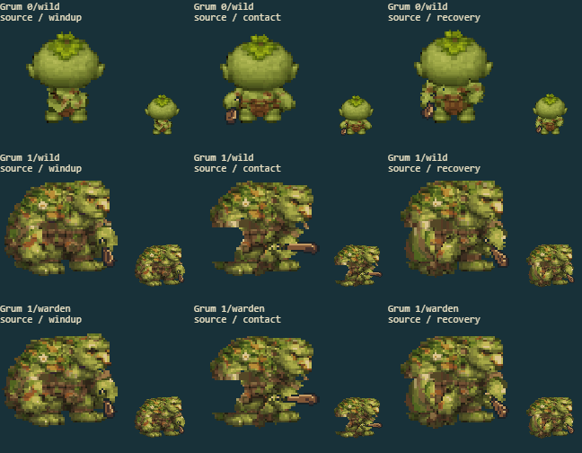
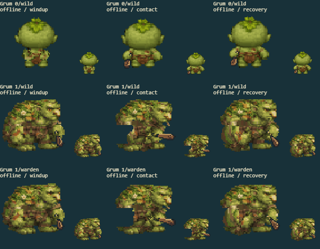

6 separate fights cover every available evolution/path in the source game and rebuilt offline game. The arena keeps combat effects. The other panels show the actual battle sprite at native and enlarged size, before the hit flash.
Full game screenshot · Contact
| Factor | Result | Observed |
|---|---|---|
| Underlying body coverage | pass | The wide evolved chest and brown waist remain present when the large arm swings away; no shoulder-shaped bite is exposed. |
| Connected limbs without a stationary duplicate | pass | The leaf-covered upper arm now travels with the forearm from the actual shoulder, and the green fist has no stationary source copy. |
| Complete costume and palette | pass | Green mottling, leaf shoulders and the brown vest remain intact; no cape is invented for this family. |
| Hand?weapon attachment | pass | The short wooden weapon remains attached to the painted green fist through horizontal contact and lowered recovery in both paths. |
| Silhouette and cell bounds | pass | The complete shoulder mass, hands and planted boot shapes remain inside the cell in source/offline fights and decoded falls. |
source

offline

All eight facings: art form 0 · art form 1 · art form 2